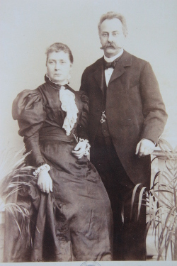
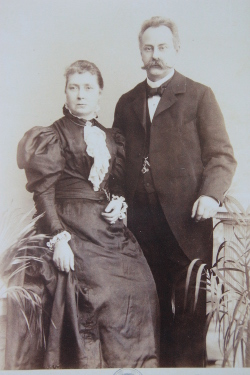

| Emmi und Henry |
| Emma und Henry, Gründer der Druckerei |  |
 | Emmi und Henry mit Julchen und deren Kindern Else und Walter |
| | Emmi und Henry |
| Emma und Henry, Gründer der Druckerei |  |
| | Emmi und Henry mit Julchen und deren Kindern Else und Walter |
Emma, genannt Emmi, war Putzmacherin und hatte ein Geschäft am Schulterblatt. Dort im Hinterzimmer wurde die Druckerei 1874 gegründet
Dazu gibt es noch die Zeitungsannonce 
Insolvenz der Firma am 15.10.2008.